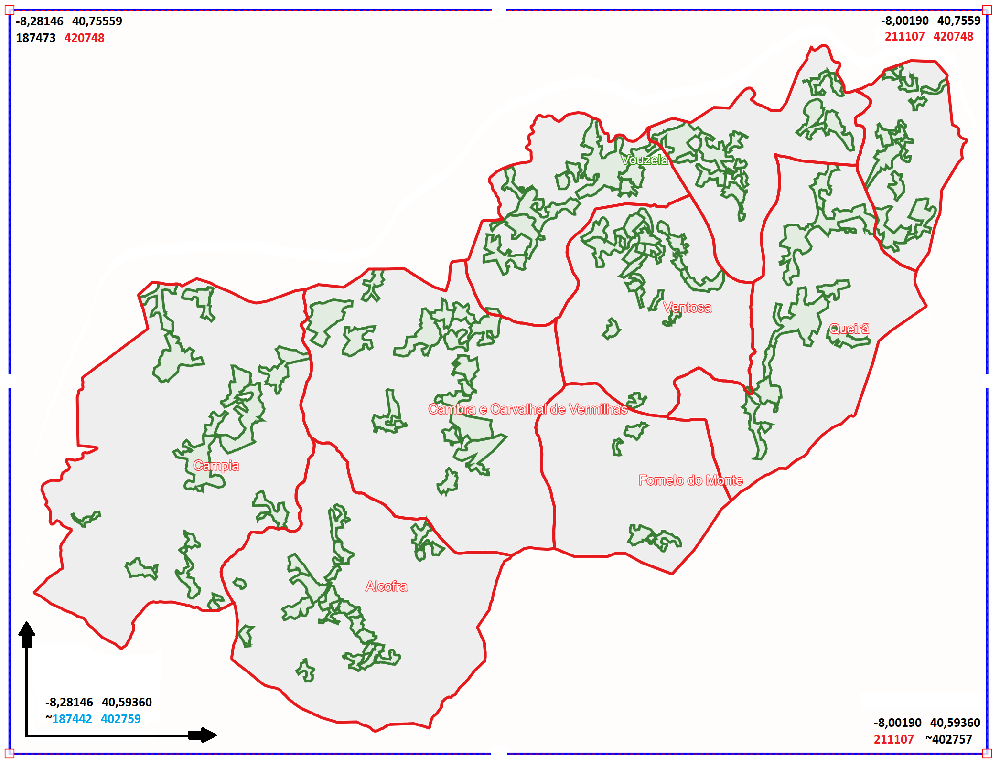

×

CAD. PREDIAL
- EPSG: 20790
(ex: X: 206783 Y: 418536)
X:
Y:
Localizar
Limpar
Limites
Toponímia e Nr. Polícia
Query WMS layers only
Turn on the WMS layers, click on the map and wait for the result. The response varies based on the speed of the external server.
Query with the unified popup
TAB2
TAB3
TAB4
The System
TITLE TAB 1
Under construction
TITLE TAB 2
Under construction
TITLE TAB 3
Under construction
Download
Info